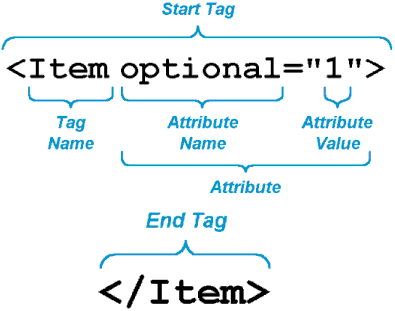
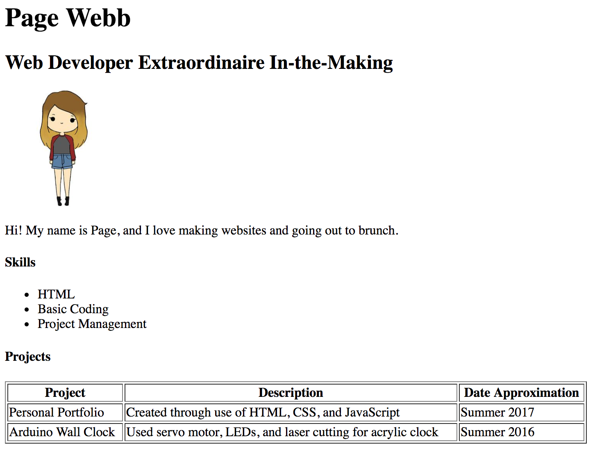
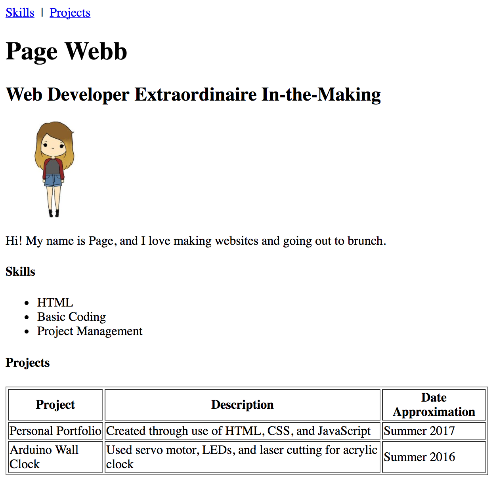

[Home](index.html)
## Structure, Style, Starter Code: Part One
[<< Previous Lesson](intro.html)&nbsp;&nbsp;|&nbsp;&nbsp;[Next Lesson >>](lesson-htmlcss-2.html)
### HTML: Hello to Markup Languages
What is HTML? HTML is an abbreviation for **Hyper Text Markup Language**. It is a markup language that browsers read to determine the structure and organization of a web page. Think of HTML as the frame to your webpage house, or as the skeleton to your webpage body.
HTML elements are the building blocks of web pages and are denoted by tags such as &lt;html&gt;, &lt;head&gt;, &lt;body&gt;, &lt;p&gt;, etc.
Using these building blocks, you will be able to organize content on your portfolio.
<img src="images/closer-look-at-tags.jpg" alt="Tags" style="height: 50%; width: 50%;">
<br><span style="color:grey">Source: [HTML and CSS Book](http://www.htmlandcssbook.com/press/)</span>
####Concepts
* [HTML Basic Tags](#tags)
* [HTML Attributes](#attributes)
* [HTML Pointers and More](#quicktips)
___
<a name="tags"></a>
#### Single and Multi Use Tags
Every HTML document requires a starter template that allows your file to be recognized as a web page. Take a look at the following:
```
<!DOCTYPE html>
<html>
<head>
<title>Page Title</title>
</head>
<body>
<h1>My First Heading</h1>
<p>My first paragraph.</p>
</body>
</html>```
Let's decipher these tags.
___
####Single Use Tags
* `<!DOCTYPE html>` **tells the web broswer that the document will be in HTML. This line of code MUST be in the first line of code in all of your HTML documents.**
* `<html>` **and its closing tag at the end of the file, `</html>` are used to inform the browser that the lines in between those two lines are HTML code.** You can view this tag as a *vertebrate* of sorts, connecting and unifying all the smaller components of the file.
* `<head>` **Content between head tags doesn’t show up as information that is shown on the web page. It is used in order to tell the web browser information about the page, such as the title and other files like stylesheets (CSS) and scripts (JavaScript) that are linked to the page.** Think about how your actual head encompasses your brain, a deep and rich well of knowledge that isn't externally apparent.
* `<title>` **Content between this and it’s ending tag are not displayed on the website itself, but are shown on the title bar.** Consider this your web page's nice (optional) head of hair.
* `<body>` **Visible content is displayed between this tag and it’s ending tag. Content that you want to appear on your website goes in the body section.** All your bones go in here!
####Multi-Use Tags
* `<h1>` In this tag, the text “My First Heading” is shown. Browsers view the &lt;h1&gt; tag as a heading tag to display large text over a section. &lt;h2&gt; through &lt;h6&gt; tags likewise exist, getting smaller in default size as they increase numerically.
* `<p>` Within this tag, the text “My first paragraph” is shown. Browsers view the &lt;p&gt; tag as a paragraph tag to display paragraph text within a section.
Of these tags, &lt;h1&gt; and &lt;p&gt; are **block** elements, meaning that their usage will force a new line to occur, while such tags as *image* and link tags are referred to as **inline** statements, meaning that all subsequent statements will be in the same line until a block element is reached. For a more comprehensive list of both types of elements, check out [this](https://www.w3schools.com/html/html_blocks.asp) page.
<br>
#### <span style="color:red">Challenge #1: Introduce Yourself</span>
Take the first step towards creating your own personal portfolio - content! Add headers and subheaders, a descriptive paragraph, and lists/tables of your skills and projects using the template below.
<span style="color:blue">Quick Tip: </span> You can make comments within your file (lines of text that won't be recognized as code) using the "&lt;!--" and "--&gt;" opening and closing tags.
```<!-- This is an HTML comment -->```
```
<!DOCTYPE html>
<html>
<head>
<title>_Page Title Here_</title>
</head>
<body>
<h1>_Your Name_</h1>
<h2>_Your Title_</h2>
<p>_So what is it you'd say you do here?_</p>
<h4>Skills</h4>
<ul>
<li>_Skill One_</li>
<li>_Skill Two_</li>
<li>_Skill Three+_</li>
</ul>
<h4>Projects</h4>
<table style="width:100%" border="1px solid black">
<tr>
<th>Project</th>
<th>Description</th>
<th>Date Approximation</th>
</tr>
<tr>
<td>_Project 1_</td>
<td>_Description 1_</td>
<td>_Date Approximation 1_</td>
</tr>
<tr>
<td>_Project 2+_</td>
<td>_Description 2+_</td>
<td>_Date Approximation 2+_</td>
</tr>
</table>
</body>
</html>```
Once you've copy-pasted the above into your text editor of choice and filled out the necessary fields, right click your file and select "Open in Browser". Your HTML should look something like this:
<img src="images/html-page.png" alt="Example HTML in Browser" style="height: 50%; width: 50%; border: solid;">
<span style="color:red">Bonus Challenge 1A: </span> What do the &lt;ul&gt;/&lt;li&gt; tags denote? What do the &lt;tr&gt;/&lt;th&gt;/&lt;td&gt; tags denote within the overarching &lt;table&gt; tags? Verify your answers [here](https://www.w3schools.com/html/html_lists.asp) and [here](https://www.w3schools.com/html/html_tables.asp).
<span style="color:red">Bonus Challenge 1B: </span> Make an ordered list of your work experience (Hint: If you get stuck, use [this](https://www.w3schools.com/html/html_lists.asp) as a reference).
___
<a name="attributes"></a>
#### HTML Attributes
Now that you can vaguely recognize the different flavors of HTML tags, how about the different **attributes**? Attributes are always specified within the start tag and are used to provide additional information about an element. Keep in mind that attributes usually come in name/value pairs in a format such that name="value".

<br><span style="color:grey">Source: [Technology Diving](http://www.technologydiving.com/essentials-of-html-elements-and-attributes/)</span>
Attributes can be split into two categories:
* **required**, in which the attribute MUST be declared within the tag in order for the tag to fulfill its purpose
* The [**href**](https://www.w3schools.com/html/tryit.asp?filename=tryhtml_attributes_link) attribute within &lt;a&gt; tags, which are used to create HTML *links*, is a prime example of this
* The [**src**](https://www.w3schools.com/html/tryit.asp?filename=tryhtml_attributes_img) attribute within an &lt;img&gt; tag is also required in order for one to use an *image* on their webpage
* **optional**, where attribute inclusion provides different information about an element but is not necessary
* The [**title**](https://www.w3schools.com/html/tryit.asp?filename=tryhtml_attributes_title) attribute functions to provide tooltip text for an element when hovered over
* The [**alt**](https://www.w3schools.com/html/tryit.asp?filename=tryhtml_attributes_alt) attribute allows you to display some alternate text when an image cannot be displayed. This attribute can prove particularly useful for the blind, who use screen readers to read webpages, and will read the 'alt' value where the image is placed.
* [**size**](https://www.w3schools.com/html/tryit.asp?filename=tryhtml_attributes_img) attributes 'width' and 'height' allow you to play with the size of an image.
In short, attributes, when not absolutely necessary, can add some pretty nifty functionality and even some trivial styling without invoking CSS. IDs and Classes are important attributes that allow you to style with CSS, but we'll get to those more in the next lesson.
For a more complete list of attributes, check out this [HTML Attribute Reference](https://www.w3schools.com/tags/ref_attributes.asp).
<br>
#### <span style="color:red">Challenge #2: Worth a Thousand Words</span> <br>
Add a picture of yourself, animated, actual, or otherwise to your webpage! Worry about positioning later. You can choose to either connect your image from an online URL or from a file within your local repository. Once you've finished, your page should look something like below.([HTML Image Reference Page](https://www.w3schools.com/html/html_images.asp))

<span style="color:red">Bonus Challenge 2A: </span> Referencing the above lesson, add (a) 'title' and (b) 'alt' attributes to your image and (c) change its size.
___
<a name="quicktips"></a>
#### HTML Pointers and More
Here are some other handy tags that make styling a whole lot easier:
* **&lt;br&gt;** creates a new line
* **&lt;b&gt;** tags make text **bold**
* **&lt;i&gt;** tags *italicize* text
* **&lt;mark&gt;** tags can be used to <mark>highlight</mark> text
* **&lt;del&gt;** tags can be used to <del>strikethrough</del> text
Pretty simple stuff, right? HTML elements consist of tags surrounded by angle brackets <> that denote what is going to be used between the opening tag <> and the closing tag </>. See the webpage for the HTML [here](https://www.w3schools.com/html/tryit.asp?filename=tryhtml_intro).
For more common and uncommon tags, check out this [cheat sheet for HTML5](https://hostingfacts.com/html-cheat-sheet/).
<br>
#### <span style="color:red">Challenge #3: What's on the Menu</span> <br>
One feature within a number of well-organized, user-friendly webpages is a navigation bar. Building off of what we learned in the 'Attributes' section, let's introduce a new attribute to our repertoire of knowledge.
The **id** attribute specifies a unique ID for an HTML element. When declaring an ID name for an element, the name must contain at least one character, no space characters, and is inherently case-insensitive.
We are going to use the id attribute to *link* a number of elements (the sections within our navbar) to specified IDs within the page using the skeleton code below. Also, check out an example [here](https://www.w3schools.com/tags/tryit.asp?filename=tryhtml5_global_id_anchor).
```
<a id="skills">This tag is the section you get to jump to! Skills is declared as the ID of this section.</a>
<a href="#skills">This tag </a> denotes the link you click to jump back to the skills section!
If the "href" attribute is present, you've got yourself a link.```
Once you've finished this task, your page should look something like this.

While your page may be short enough now that you don't need a navigation bar, this feature will prove indispensable when you generate more content and your single-page portfolio becomes increasingly difficult to walk through.
<br>
[<< Previous Lesson](intro.html)&nbsp;&nbsp;|&nbsp;&nbsp;[Next Lesson >>](lesson-htmlcss-2.html)